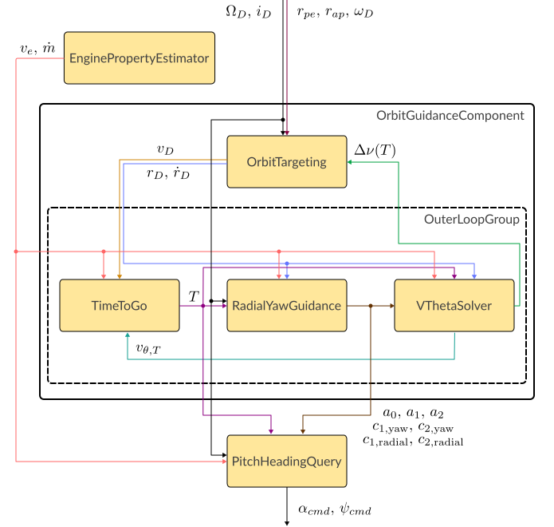
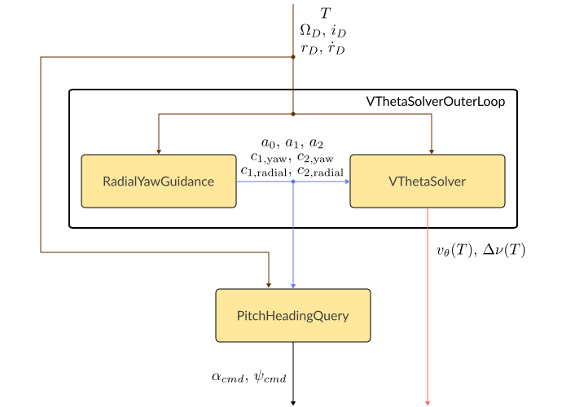

Guidance and Simulation Objects¶
Simulation Objects¶
The base class for all simulator objects is SingleStageSimulatorBase. All simulator objects contain a GuidanceBase object and a SimulationLog object.
There are currently two simulation objects in the program: IntegratorSim and KRPCClient.
IntegratorSim uses a Runge-Kutta 4 integrator. The vehicle is only under the forces of gravity and acceleration. Changes in orientation are instantaneous and determined by the guidance object, there are no turning dynamics.
KRPCClient uses the kRPC library to connect to Kerbal Space Program and send commands to the active vessel. This object only supports locally-hosted kRPC servers. kRPC's internal autopilot is used to control vehicle orientation.
Simulation objects accept guidance objects and config objects during initialization.
Guidance Objects¶
Guidance objects are objects that encapsulate guidance algorithms. They act as an interface between guidance implementations and simulation objects. Guidance objects are defined in guidance_interface.py.
GuidanceBase is the abstract base class that defines the interface for all guidance objects. All guidance objects are a subclass of GuidanceBase.
OpenMDAOGuidanceBase subclasses GuidanceBase, and contains methods and a logging object specific to OpenMDAO models. Since all guidance objects currently in the program are implemented with OpenMDAO, all guidance objects subclass OpenMDAOGuidanceBase.
The most important member function of GuidanceBase is get_command(), which returns the commanded thrust, pitch, and heading, given the current state. All guidance objects use the state vector
$$\begin{align} \begin{bmatrix}\; x & y & z & \dot x & \dot y & \dot z & m \;\end{bmatrix} \end{align}$$
where $x$, $y$, $z$ are the components of the position vector $\vec r$ in the global inertial frame, and $m$ is mass.
Guidance objects are used when initializing simulation objects. Guidance objects use config objects during initialization.
1.1. OrbitTargetingAscent¶
Single-stage guidance algorithm that targets:
- apoapsis
- periapsis
- longitude of ascending node
- inclination
- argument of periapsis
This uses the OrbitTargetingAscentGroup model. The connections of the components within this model is shown in the following figure.

OrbitTargetingAscentGroup object, omitting most user inputs. Only most relevant model outputs presented.
Note that the OrbitGuidanceComponent has a Boolean input "run_outer_loop" (not labeled on the figure): When it is set to true, new values for $T$ and the $c_1,\, c_2$ constants are calculated when .compute() is called for this model. Otherwise, only the EnginePropertyEstimator and PitchHeadingQuery components are run.
The rate of outer loop calls is set in the simulation object which contains this guidance object. Ideally, the outer loop would be run once every few seconds.
1.2. DebugAscent1¶
Single-stage guidance algorithm that targets:
- radius
- radial velocity
- cut-off time
- longitude of ascending node
- inclination
The purpose of this guidance object is to test a subset of the components used in OrbitTargetingAscent. See test_integrator_sim.py for these tests.

DebugAscent1Group object, omitting most user inputs. Only most relevant model outputs presented.
Like the OrbitTargetingAscent guidance object, VThetaSolverOuterLoop has a Boolean run_outer_loop input which determines if it will run and compute new values for $c_1,\, c_2$ when .compute() is called for this model.